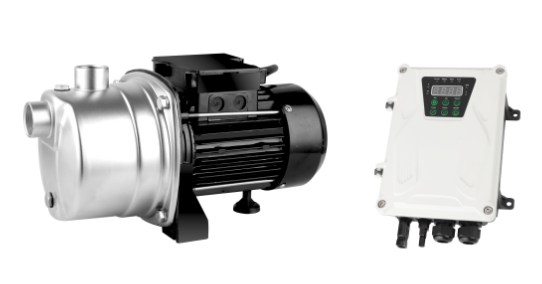
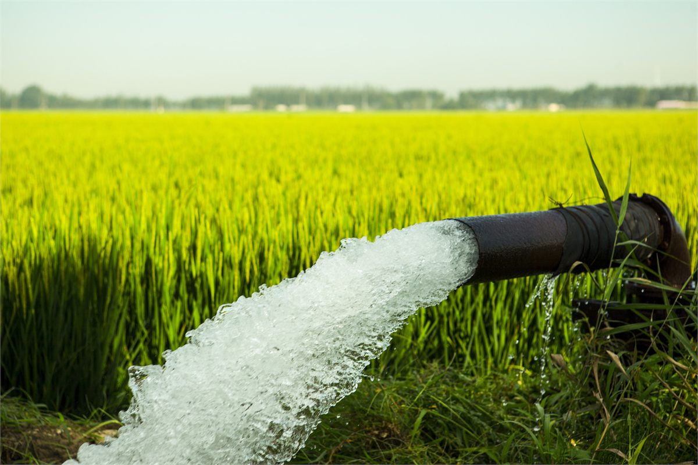
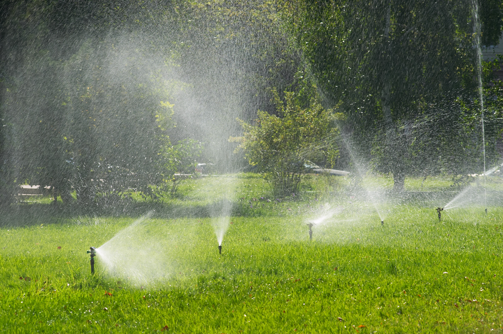
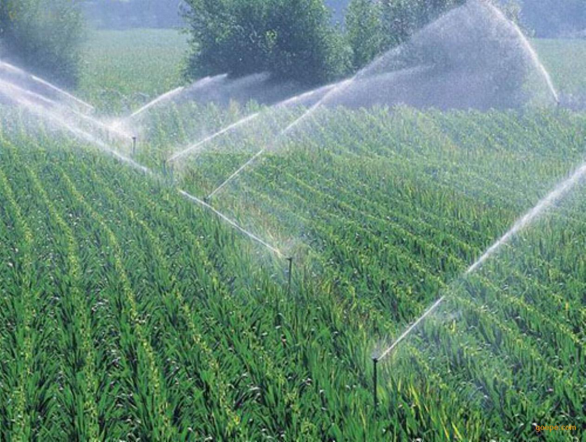
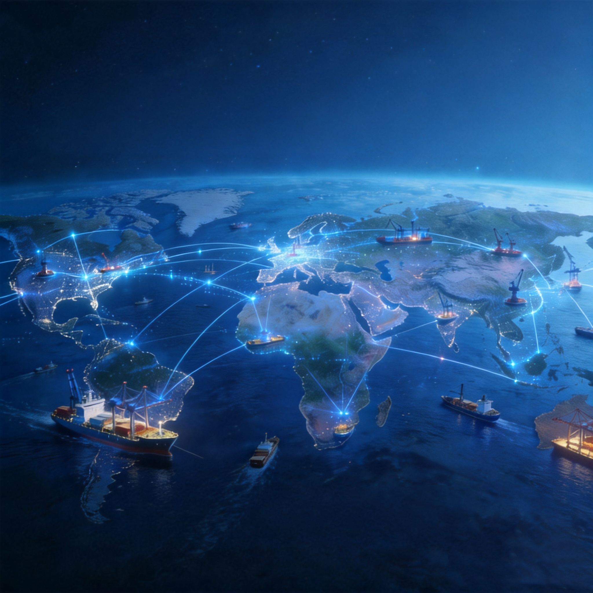

深圳市凯霖国际贸易有限公司
太阳能水泵
让新能源驱动农业发展
让科技创造更高价值
EMPOWERING AGRICULTURE WITH CLEAN ENERGY
15+
年行业经验
2000+
项目案例
30+
出口国家
98%
客户满意度
向下探索
公司介绍
专注清洁能源 · 推动农业现代化
深圳市凯霖国际贸易有限公司，专业从事太阳能水泵设备研发、制造与国际贸易
深圳市凯霖国际贸易有限公司成立于深圳，是国内领先的太阳能水利系统解决方案提供商。凭借十五年深耕行业的经验，我们将先进光伏技术与水泵系统深度融合，为全球客户提供从设备供应到系统集成的一站式服务。
公司核心产品涵盖直流无刷太阳能水泵、高效单多晶光伏组件及完整的离网供水系统。产品广泛应用于农业灌溉、偏远村落饮水、牧场供水、水产养殖等领域，出口至东南亚、中东、非洲、南美洲等30余个国家和地区。
我们坚信"让新能源驱动农业发展，让科技创造更高价值"，致力于以清洁能源技术降低农业生产成本，提升偏远地区生活品质，助力全球可持续发展目标的实现。
高效能转换
光电转换效率达22%+，MPPT智能追踪
全球化服务
30+国出口经验，多语言技术支持
极端耐候性
IP68防护，-20°C至+70°C稳定运行
一站式交付
从设计到安装调试全程跟进
产品展示
核心产品系列
点击产品卡片查看完整技术参数规格与适用场景说明

SJET陆地太阳能泵
最大流量3 m³/h
最大扬程55 m
最大功率750 W
最大适配光伏板功率1250 W
查看详细参数
SZB陆地太阳能泵
最大流量4 m³/h
最大扬程45 m
最大功率750 W
最大适配光伏板功率1250 W
查看详细参数
案例视频
真实项目应用与运行效果展示
展示产品在不同场景中的实际应用案例，安装过程、运行效果及客户使用反馈
如浏览器不支持视频，请升级浏览器或刷新页面。
解决方案
面向多元场景的系统方案
从农业灌溉到偏远供水，我们为各类应用场景提供针对性系统设计
农业节水灌溉
多泵并联智能分区灌溉系统，满足大面积农田精准用水需求，年均节水超30%，大幅降低生产成本。
偏远村落饮水
无电网山区、高原饮水解决方案，配合储能系统全天候供水，已在西藏、云南、新疆多地成功部署。
水产养殖循环
鱼塘虾池增氧循环系统，日照强度与需氧量自然契合，告别高电费，提升养殖成活率与经济效益。
牧场草地供水
移动式太阳能泵站，支持快速部署与季节性迁移，适应内蒙古、新疆等大范围分散水源取水需求。
村镇集中供水
农村饮水安全工程标准方案，集中泵站+高位水箱，覆盖数百至数千人口，政策补贴优先推荐型号。
国际出口定制
针对东南亚、非洲、中东等海外市场的电压适配与认证定制，提供英/法/阿拉伯语技术文档支持。
案例展示
已落地的真实项目
每一个案例背后，是凯霖团队从勘察到运维的全程陪伴

巴基斯坦农业井灌系统
水源：深井
系统：离网光伏+深井泵
用途：水稻、小麦、棉花灌溉
特点：完全替代柴油与电网，灌溉频率提高（随时抽水）
系统：离网光伏+深井泵
用途：水稻、小麦、棉花灌溉
特点：完全替代柴油与电网，灌溉频率提高（随时抽水）

非洲肯尼亚小农灌溉（典型井水+蔬菜种植）
水源：深井
系统：离网光伏 + 潜水泵
效果：替代柴油泵（原来柴油成本高），农作物一年可增加 1–2 季种植，农户收益显著提升（研究显示利润提升可达100%以上）。
系统：离网光伏 + 潜水泵
效果：替代柴油泵（原来柴油成本高），农作物一年可增加 1–2 季种植，农户收益显著提升（研究显示利润提升可达100%以上）。

印度农业灌溉
政府目标：百万级太阳能水泵计划
典型应用：小麦、稻田灌溉，农村饮水供给
典型应用：小麦、稻田灌溉，农村饮水供给
常见问题
关于太阳能水泵的常见问题
选型、配置、供货与售后方面客户最常问到的问题
阴天或夜间太阳能水泵还能工作吗？
水泵由光伏组件直接驱动，出水量随日照强度变化：阴天出水量下降，夜间不工作。需要全天候用水时，标准做法是配套高位水箱或蓄水池，白天蓄水、随时取用；也可加装蓄电池组。
必须配蓄电池吗？
不是必须。基础方案由光伏组件经 MPPT 控制器直接驱动水泵，成本更低、故障点更少。只有在夜间必须取水且无法设置蓄水设施时，才建议增加蓄电池。
水泵能抽多深的井？如何选型？
深井泵覆盖 3—10 英寸井径，部分型号最大扬程可达 190—245 米，具体见各产品的参数表。选型需要三个数据：井深与静水位、每日用水量（m³）、以及扬程要求。把这三项发给我们，可免费出配置方案。
一台泵需要配多少瓦光伏板？
光伏阵列总功率通常比水泵额定功率高 20%—40%，以保证在非正午时段仍有足够输出。例如 750W 水泵一般配 1000W 左右组件。实际配置随当地日照条件、扬程和每日出水量调整。
设备能适应高温、严寒和多沙水质吗？
电机工作温度范围 −20°C 至 +70°C，防护等级 IP68，采用 SS304 不锈钢泵头、NSK 轴承与永磁同步电机，并集成过载、欠载、堵转与过热保护。多沙水源建议配置沉砂措施并在选型时说明。
能发货到俄罗斯和独联体国家吗？售后如何？
产品已出口 30 多个国家，包括俄罗斯、哈萨克斯坦、乌兹别克斯坦以及非洲、中东、东南亚市场，可安排海运、铁路或空运。我们提供俄语、英语、中文技术资料，并从选型、安装到调试全程跟进；具体交期与质保条款以订单合同为准。
联系我们
随时与凯霖对话
销售咨询、技术支持、售后服务，多渠道快速响应
WhatsApp
+8619042951240
24小时内回复
WeChat
KairingTrade
24小时内回复
商务邮箱
Kairingtrade@outlook.com
24小时内回复
